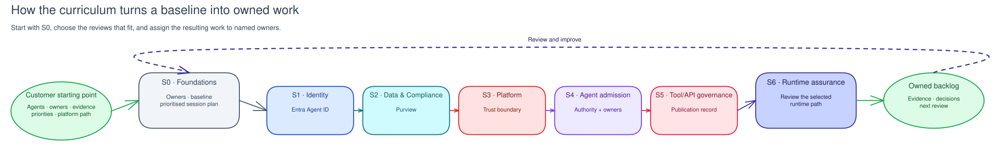

Govern AI agents
in your own tenant
A co-delivered curriculum that puts Microsoft's AI-agent governance stack into production: identity, data, security, evaluation, red-teaming, and a control plane, one working session at a time.
Done with you, not to a demo. A facilitator guides your admins through real configuration in your tenant. Every session is report-only by default, ships a rollback, and leaves a durable artifact behind.
Deploy Citadel. Build governance. Keep the evidence.
Citadel provides the governed AI runtime platform: gateway, access contracts, API Center, safety controls, PII masking, auth, telemetry, and FinOps. RVAS builds the governance operating model on top: owners, policies, evidence, evaluation gates, red-team findings, registry reconciliation, maturity scoring, and backlog.
APIM gateway, contracts, API Center, Prompt Shields, PII masking, gateway auth, telemetry, and cost visibility.
Ownership, identity governance, data policy, security evidence, evaluation gates, red-team actions, registry reconciliation, and maturity scoring.
If a capability belongs to Citadel, RVAS does not rebuild it. Deploy or connect Citadel first, then govern what runs through it.
Seven sessions. Seven durable outcomes.
Each session is a hands-on working session that leaves something lasting in your environment: Infrastructure as Code, exported policies, evaluation and red-team pipelines, runbooks, and a maturity score that provably moves.
Co-delivered, report-only, evidence-backed.
The facilitator drives the narrative; your admins hold the privileges and make the changes. Nothing runs in a demo tenant; the whole point is that the configuration stays with you.
Agree the durable artifact and the safety protocol. Confirm a break-glass account, a change window, and a named approver before any change.
Your admins make the change: Conditional Access report-only, DLP in test, scans against a non-production agent. Enforcement is a later, deliberate step.
Confirm it worked and capture proof (exports, logs, policy JSON) into the takeaway kit's evidence folder. That becomes your governance record.
Every session ships IaC, scripts, policies, pipelines, a runbook, and a rollback under labs/sNN-*/, yours to keep running in production.
What you implement, session by session.
The agents you build climb an identity → data → security → evaluation → control pipeline, framed by the S0 operating model and re-scored each loop.

Baseline the tenant, then deliver.
- Read How to Deliver. The delivery model, the five personas, the safety protocol, and room setup.
- Read Governance Built on Citadel. The practical framing for what Citadel provides and what RVAS builds on top.
- Run the Readiness Assessment. Baseline maturity across seven domains and generate a prioritized session roadmap.
- Deliver the sessions in the recommended order, or the order the assessment prioritizes, then re-score at S6 to prove the lift.